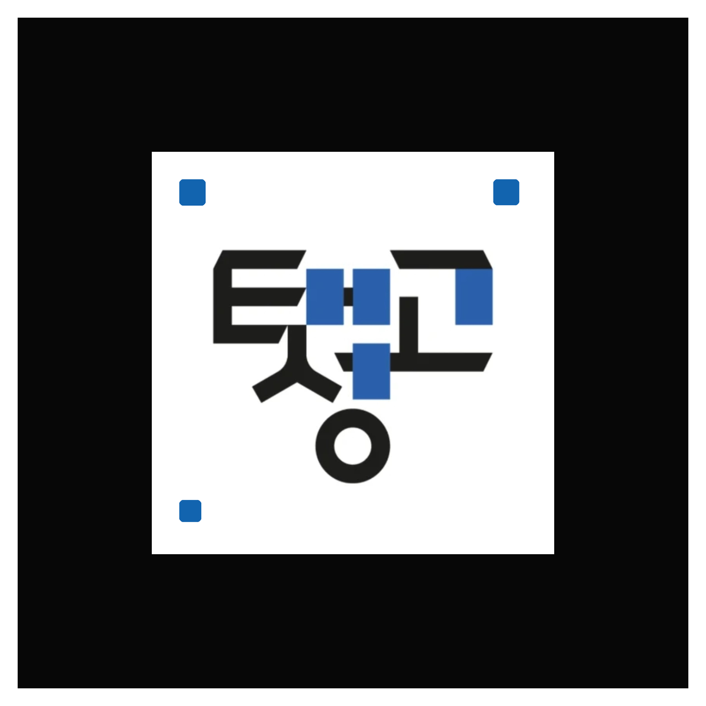

← 안내
TAESUNG · AR RING
v0.8
↻ 재생
화면: 채움
진단
사용 방법

인식이 잘 안 된다면
① 조명 밝은 곳에서 흰색 여백과 검정 테두리 전체가 보이게 촬영
② 먼저 출력한 80mm 카드로 시험
③ 15–25cm 간격에서 천천히 움직이기
④ 카메라를 가린 손가락을 치우기
⑤ 브라우저 카메라 권한 허용
AR 엔진 시작 중…
−
로고 150%
+
링 안에 마커 전체가 보이도록 비춰주세요
카메라 진단 준비 중…